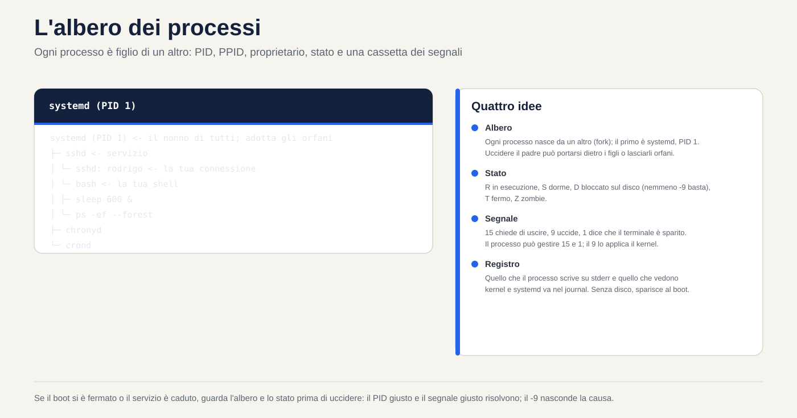
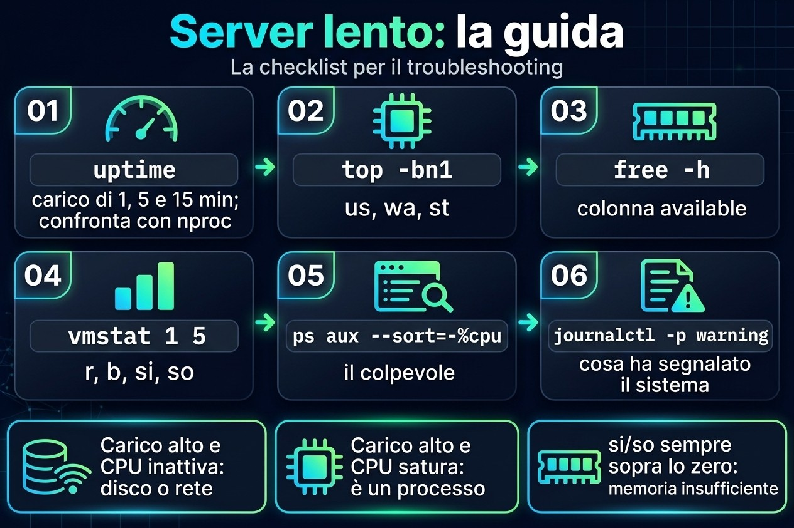
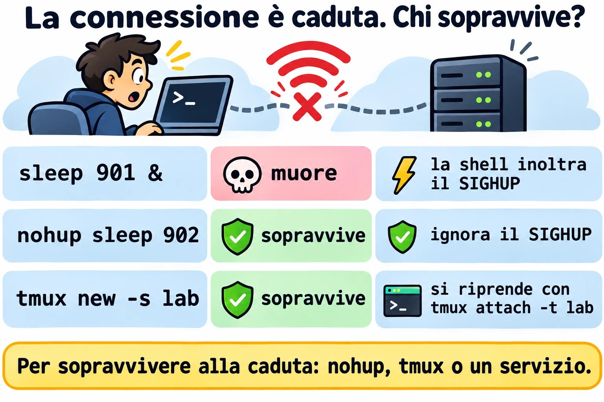
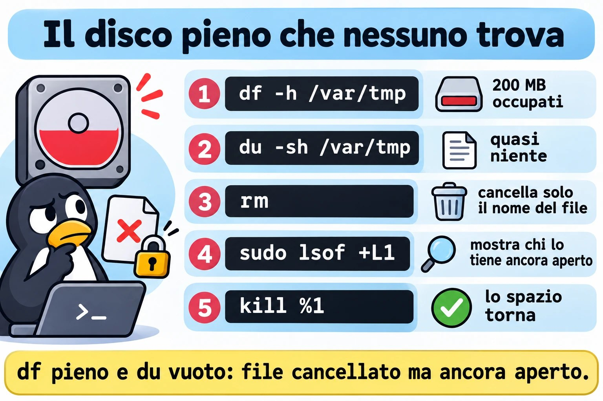

Lezione 2.3 · Processi e log
Terza lezione del Modulo 2. Squilla il telefono: "il server è lento". È la frase più comune del supporto e la più vaga. Lento perché? Un processo che si mangia il processore? La memoria è finita e il sistema sta usando lo swap? Un disco ingolfato che tiene fermi tutti? Oggi impari a rispondere in cinque minuti, via SSH, senza riavviare niente: chi sta girando, quanto consuma ciascuno, come chiedere gentilmente a un programma di fermarsi e come costringerlo, e dove il sistema ha annotato cosa è successo prima del tuo arrivo. Alla fine sai leggere il journal come si legge la cartella clinica di un paziente.
| Scheda | Lezione 2.3 |
|---|---|
| Modulo | M2 · Sistema, utenti e permessi, lezione 3 di 8 |
| Quando | Settimana 4 |
| Alla fine sei in grado di | Elencare e filtrare i processi con ps, pgrep e top; leggere le colonne che contano (PID, PPID, %CPU, %MEM, STAT); spiegare cos'è il load average; inviare segnali con kill e sapere quando usare ciascuno; cambiare la priorità con nice e renice; eseguire lavori in background che sopravvivono al logout; trovare nel journal cosa è successo, quando e con chi; rendere permanente il journal |
| Prerequisiti | Lezione 2.2 (free -h, colonna available; journalctl -k); Lezioni 1.5 e 1.6 (grep e pipe) |
| Durata | Circa 2h |
| Snapshot | m2a3-inicio e m2a3-fim su entrambe le VM |
1 · Riscaldamento
Tre domande, a memoria. Scrivi le risposte; le Soluzioni le verificano in fondo.
- In Windows, apri Gestione attività e clicchi su "Termina attività". Secondo te: il programma ha la possibilità di salvare ciò che stava facendo prima di chiudersi, o sparisce e basta?
- Esegui uno script lungo via SSH, la tua connessione cade. Secondo te: lo script continua a girare sul server o muore insieme alla connessione?
topmostraload average: 4.00. Secondo te: è un bene, un male, o dipende da cosa?
2 · Perché conta
"È lento" e "si è fermato" sono metà dei ticket. Chi li risolve non è chi sa più comandi; è chi ha una scaletta e la segue sempre nello stesso ordine: carico → processore → memoria → disco → il processo colpevole → cosa dice il log. Con questa scaletta, arrivi sul server, esegui quattro comandi e dici al cliente cosa sta succedendo, prima che abbia finito di spiegare.
E c'è il riflesso che fa danni: kill -9. Il programma si è bloccato, l'amministratore manda il -9, il programma sparisce. Ma il database non ha avuto il tempo di scrivere ciò che aveva in memoria, il file di lock è rimasto lì, e il servizio non riparte più. Sapere la differenza tra chiedere di uscire e staccare la spina è ciò che separa risolvere dal creare il prossimo ticket.
Infine, il log. Quando il cliente dice "ieri sera è caduto", tu non c'eri. Il journal sì. Ma solo se viene scritto su disco: nella configurazione predefinita di Rocky, il journal sta in memoria e sparisce a ogni boot. Il "cos'è successo prima del riavvio?" muore insieme a lui. Oggi lo ripari su entrambe le VM.
3 · Modello mentale
Ogni processo è un figlio. Ha un numero (PID), un padre (PPID), un proprietario, uno stato e una cassetta delle lettere per i segnali. Non comandi un processo; gli mandi una lettera.
systemd (PID 1) ← o avô de todos; adota os órfãos
├─ sshd ← serviço
│ └─ sshd: student ← a sua conexão
│ └─ bash ← o seu shell
│ ├─ sleep 600 & ← um filho em segundo plano (job)
│ └─ ps -ef --forest ← o comando que você acabou de digitar
├─ chronyd
└─ crondQuattro idee reggono la lezione:
| Idea | Cosa significa | Conseguenza |
|---|---|---|
| Albero | Ogni processo nasce da un altro (fork); il primo è systemd, PID 1 | Uccidere il padre può portarsi via i figli, o lasciarli orfani, adottati dal PID 1 |
| Stato | In esecuzione (R), addormentato in attesa di qualcosa (S), bloccato in attesa del disco (D), fermo (T), zombie (Z) | Un D non risponde a nessun segnale, nemmeno al -9: aspetta il disco |
| Segnale | Un messaggio numerato: 15 chiede di uscire, 9 uccide, 1 avvisa "il terminale è sparito" | Il processo può gestire il 15 e l'1; il 9 non arriva mai fino a lui, il kernel agisce direttamente |
| Registro | Tutto ciò che il processo scrive sullo standard error, e tutto ciò che il kernel e systemd vedono, va nel journal | Se non è stato scritto su disco, è sparito al boot |


4 · Concetto a strati
Essenziale
Vedere i processi. Due stili di ps sono sopravvissuti nella pratica; impara a memoria uno per tipo:
ps aux # stile BSD: tutti, con %CPU, %MEM, proprietario
ps -ef # stile Unix: tutti, con PPID (il padre)
ps -ef --forest # l'albero
ps -o pid,ppid,user,stat,%cpu,%mem,cmd -p 1234 # solo le colonne che vuoi, di un PID| Colonna | Significa |
|---|---|
PID | Il numero del processo; unico finché vive |
PPID | Il numero del padre |
USER | Il proprietario; è con i suoi permessi che il processo agisce (Lezione 2.7) |
%CPU | Quanto del processore ha usato (media da quando è partito, in ps; adesso, in top) |
%MEM e RSS | Quanta memoria fisica occupa |
STAT | Lo stato: R, S, D, T, Z, più lettere di dettaglio (s = leader di sessione, + = in primo piano, < = priorità alta, N = priorità bassa) |
TTY | Il terminale; ? significa che non ce l'ha, come i servizi |
Trovare un processo per nome. pgrep risponde con il PID; anche pidof; ps con grep funziona, ma nella lista compare lo stesso grep:
pgrep -a sshd # PID e riga di comando
pgrep -u student # tutti i processi dell'utente
pidof chronydIl pannello dal vivo: top. Aprilo e impara cinque tasti: P ordina per processore, M per memoria, 1 mostra ogni core, k manda un segnale, q esce. Le prime cinque righe sono il riepilogo del server:
top - 14:02:11 up 3 days, 2 users, load average: 0.42, 0.30, 0.25 ← carga de 1, 5 e 15 minutos
Tasks: 128 total, 1 running, 127 sleeping, 0 stopped, 0 zombie
%Cpu(s): 2.0 us, 1.0 sy, 0.0 ni, 96.5 id, 0.5 wa, 0.0 hi, 0.0 si, 0.0 st
MiB Mem : 1967.4 total, 210.3 free, 612.9 used, 1144.2 buff/cache
MiB Swap: 2048.0 total, 2048.0 free, 0.0 used. 1354.5 avail MemNella riga %Cpu(s), tre numeri raccontano la storia: us (programmi al lavoro), wa (processore fermo in attesa del disco) e st (tempo che l'hypervisor ha rubato alla VM per darlo a un'altra). id alto e wa alto allo stesso tempo: il problema è il disco, non il processore.
Il load average. Il load average è il numero medio di processi che vogliono il processore o sono in attesa del disco (stati R e D). Confrontalo con il numero di core (nproc): carico 4 su una macchina da 4 core è pieno; su una da 16, è margine; su una da 1, è coda. I tre numeri, di 1, 5 e 15 minuti, dicono dove sta andando: 4.0, 2.0, 0.5 sta peggiorando adesso; 0.5, 2.0, 4.0 sta migliorando.
Segnali. kill non uccide: manda un segnale. Quelli che usi:
| Segnale | Numero | Cosa fa | Quando |
|---|---|---|---|
SIGTERM | 15 | Chiede di terminare; il programma può salvare, chiudere i file, cancellare il file di lock | Sempre per primo. È il predefinito di kill |
SIGKILL | 9 | Il kernel rimuove subito il processo; lui non lo sa | Solo dopo che il 15 è fallito e hai aspettato |
SIGHUP | 1 | "Il terminale si è spento". Molti servizi lo interpretano come "rileggi la configurazione" | Ricaricare un servizio vecchio senza abbatterlo |
SIGINT | 2 | Quello che manda Ctrl+C | Interrompere ciò che è nel terminale |
SIGSTOP e SIGCONT | 19 e 18 | Congelare e scongelare; Ctrl+Z manda un cugino del 19, SIGTSTP | Mettere in pausa senza uccidere |
kill 1234 # manda il 15
kill -9 1234 # manda il 9
kill -l # elenca tutti i segnali
pkill -u fulano sleep # manda il 15 a tutti gli "sleep" di fulano
killall sleep # manda il 15 a tutti gli "sleep", di chiunqueDove stanno i log. Due fonti, che oggi convivono:
| Fonte | Cos'è | Come leggerla |
|---|---|---|
| Journal di systemd | Database binario con tutto: kernel, servizi, login, con data, priorità e unit | journalctl |
File in /var/log | Testo, scritto da rsyslog a partire dal journal, e da programmi che scrivono direttamente | less, tail -f, grep |
Su Rocky, rsyslog è installato e scrive /var/log/messages e /var/log/secure (login e sudo). Su Debian 13, non c'è: il journal è la fonte, e /var/log contiene poco oltre ai log di apt e dpkg.
Intermedio
journalctl, i filtri che risolvono. Il journal è grande; il valore sta nel filtrare:
| Domanda | Comando |
|---|---|
| Cos'è successo in questo boot? | journalctl -b |
| E nel boot precedente, prima della caduta? | journalctl -b -1 (solo se il journal è permanente) |
| Quali boot conosce il journal? | journalctl --list-boots |
| Solo un servizio | journalctl -u sshd (Rocky) oppure -u ssh (Debian) |
| Solo errori e peggio | journalctl -p err (livelli: emerg, alert, crit, err, warning, notice, info, debug) |
| In una finestra di tempo | journalctl --since '2026-11-02 08:00' --until '09:30'; oppure --since '-1h', --since yesterday |
| Dal vivo | journalctl -f |
| Le ultime righe | journalctl -n 50 |
| Di un programma, per nome | journalctl -t sudo; journalctl _COMM=sshd |
| Di un PID | journalctl _PID=1234 |
Senza paginazione, da usare con grep | journalctl --no-pager |
| Con la spiegazione dell'errore, quando esiste | journalctl -xe |
I filtri si sommano: journalctl -u sshd -p warning --since today sono "gli avvisi di SSH di oggi".

Il journal che sparisce al boot. systemd-journald scrive in /var/log/journal/ se la cartella esiste; altrimenti scrive in /run/log/journal/, che sta in memoria e sparisce al boot. A decidere è l'opzione Storage= in /etc/systemd/journald.conf:
Storage= | Comportamento |
|---|---|
auto (il predefinito) | Scrive su disco se /var/log/journal/ esiste; altrimenti, solo in memoria |
persistent | Crea la cartella e scrive su disco |
volatile | Solo in memoria |
Su Rocky 9, la cartella non esiste dopo l'installazione: il journal è volatile e rsyslog è quello che conserva lo storico in /var/log/messages. Su Debian 13, la cartella viene creata all'installazione e il journal è già permanente. Le verificherai entrambe nel lab, perché "il predefinito" cambia tra una versione e l'altra e conta ciò che c'è sulla macchina.
Priorità: nice e renice. Il nice va da -20 (più priorità) a 19 (meno). Il predefinito è 0. Un processo "gentile" (nice alto) cede il processore agli altri:
nice -n 10 tar czf /tmp/backup.tgz /etc # parte già con nice 10
renice -n 15 -p 1234 # ne cambia uno già in esecuzione
ps -o pid,ni,cmd -p 1234 # verificaUn utente comune può solo aumentare il nice dei propri processi (diventare più gentile). Diminuirlo, o toccare quelli degli altri, richiede root. In top, la colonna NI mostra il valore, e PR mostra la priorità che il kernel ha calcolato a partire da esso.
Primo e secondo piano. Nella shell, un comando con & alla fine gira in background, come un job:
| Comando | Cosa fa |
|---|---|
comando & | Gira in background; la shell mostra [1] 4321 (numero del job e PID) |
Ctrl+Z | Mette in pausa ciò che è in primo piano |
jobs -l | Elenca i job di questa shell |
bg %1 | Continua il job 1 in background |
fg %1 | Porta il job 1 in primo piano |
kill %1 | Manda il 15 al job 1 |
I job sono della shell: se la shell muore, manda SIGHUP ai figli, ed essi muoiono con lei. Per sopravvivere al logout:
| Modo | Come | Quando |
|---|---|---|
nohup comando & | Ignora SIGHUP; l'output va in nohup.out | Un comando isolato, facile da ricordare |
tmux (o screen) | Una sessione di terminale che continua sul server; esci e torni con tmux attach | Il modo di tutti i giorni: aggiornamento lungo, copia grande |
systemd-run --user o una unit di servizio | systemd si occupa del processo | Cose che devono girare sempre (Modulo 4) |
Ponte Windows
| In Windows | In Linux | Cosa cambia |
|---|---|---|
| Gestione attività, scheda Processi | top, ps aux | top funziona via SSH e mostra il load average, che Windows non mostra |
| "Termina attività" | kill PID (15) | Linux chiede prima; il programma può salutare |
| "Termina albero di processi" | kill -9, oppure pkill -P PPID per i figli | |
| Priorità: "Sotto la norma" | renice -n 10 | La scala è invertita: numero più alto, priorità più bassa |
| Visualizzatore eventi | journalctl | Filtri da riga di comando invece di clic |
| Log di Applicazioni, Sistema, Sicurezza | journalctl -u serviço, journalctl -k, /var/log/secure o journalctl -t sudo | |
| Attività che continua dopo il logoff | tmux, nohup, o un servizio |
Avanzato
/proc/PID/, il processo dall'interno. Ogni processo ha una cartella: /proc/1234/cmdline (la riga di comando), /proc/1234/status (stato, memoria, proprietario), /proc/1234/fd/ (i file aperti, come link), /proc/1234/cwd (la cartella in cui si trova). ps e top leggono da lì. Quando un disco è pieno e non trovi il file, ls -l /proc/*/fd 2>/dev/null | grep deleted mostra il file cancellato che un processo tiene ancora aperto: lo spazio torna solo quando il processo lo chiude.
Zombie e orfano. Un processo terminato resta nella tabella come Z finché il padre non legge il suo codice di uscita. Uno zombie non consuma processore né memoria, solo una riga nella tabella; è inutile mandargli kill, perché è già morto. A risolvere è il padre: o legge, o muore, e allora systemd lo adotta e fa pulizia. Un orfano è il contrario: il padre è morto e il figlio continua vivo, adottato dal PID 1.
Lo stato D. Un processo in D (uninterruptible sleep) è dentro il kernel in attesa del disco o della rete (un NFS caduto, per esempio). Nessun segnale lo tira fuori da lì, nemmeno il 9. Se ne vedi diversi in D e il carico alto con il processore fermo, il problema è nello storage. Riavviare il server può perfino bloccarsi allo spegnimento a causa loro.
systemd-cgls e systemd-cgtop. systemd raggruppa i processi di ogni servizio in un cgroup. systemd-cgls mostra l'albero per servizio; systemd-cgtop mostra il consumo per servizio, e non per processo. Su un server con un servizio che apre cento processi, è lì che vedi chi è il colpevole.
sudo journalctl × gruppi. Senza sudo, journalctl mostra solo i messaggi dell'utente stesso. I membri del gruppo wheel (Rocky), adm (Debian) o systemd-journal (entrambi) leggono tutto senza sudo.
5 · Rocky × Debian
| Cosa | Rocky 9 | Debian 13 |
|---|---|---|
| Journal su disco dopo l'installazione | No: /var/log/journal/ non esiste, journal volatile | Sì: la cartella esiste e il journal è permanente |
rsyslog | Installato e attivo; scrive /var/log/messages e /var/log/secure | Non installato; il journal è la fonte |
Log di login e sudo in testo | /var/log/secure | Non c'è; usa journalctl -t sudo e journalctl -u ssh |
| Nome della unit di SSH | sshd | ssh |
Chi legge tutto il journal senza sudo | Gruppi wheel e systemd-journal | Gruppi adm e systemd-journal |
tmux | dnf install tmux | apt install tmux |
pstree | Pacchetto psmisc, in genere installato | Pacchetto psmisc, può mancare |
killall | Pacchetto psmisc | Pacchetto psmisc |
6 · Lab guidato
Fai tutto prima su rocky-lab e ripeti su debian-lab. Dove Debian cambia, il passo avvisa. Apri due terminali SSH sulla stessa VM: il terminale 1 per creare i processi, il terminale 2 per osservare.


Passo 0 · Snapshot
Su Proxmox, fai lo snapshot m2a3-inicio di entrambe le VM. Se qualcosa va molto male, torni qui.
Passo 1 · Il tuo albero
Nel terminale 1:
echo $$ # il PID della tua shell
ps -o pid,ppid,user,stat,cmd -p $$
ps -ef --forest | grep -B3 -A1 "$$"Segui il PPID verso l'alto: il tuo bash è figlio di un sshd: student, che è figlio di un altro sshd, che è figlio di systemd, PID 1. Ora verifica il nonno:
ps -o pid,user,cmd -p 1
nproc # quanti core ha la VM
uptime # da quanto tempo è accesa e il caricoAnnota nproc. Ti servirà per leggere il carico fra poco.
Passo 2 · Primo e secondo piano
Ancora nel terminale 1:
sleep 600 & # [1] e un PID
sleep 700 # questo blocca il terminaleIl secondo sleep ha bloccato il terminale. Premi Ctrl+Z. La shell risponde [2]+ Stopped. Ora:
jobs -l # l'1 in esecuzione, il 2 fermo
ps -o pid,stat,cmd -C sleep # quello fermo compare con STAT T
bg %2 # il 2 riprende a girare, in background
jobs -l
fg %1 # porta l'1 in primo pianoIl terminale è di nuovo bloccato, ora su sleep 600. Premi Ctrl+C: riceve SIGINT e termina. Pulisci l'altro:
kill %2
jobs -l # vuotoDecidi 1 · Il terminale bloccato. Hai lanciato via SSH una copia che durerà un'ora, senza &. Il terminale è bloccato e ti serve. Cosa fai senza perdere la copia?
- A)
Ctrl+Ce la rilanci con&alla fine. - B)
Ctrl+Ze poibg. - C) Apri un altro terminale e mandi
kill -STOPalla copia. - D) Chiudi la finestra SSH; la copia continua da sola.
Scegli un'opzione prima di continuare.
| Se hai scelto | Risultato | Perché |
|---|---|---|
| A | ❌ Sbagliato | Ctrl+C interrompe la copia, e ricominci da zero. |
| B | ✅ Giusto | Ctrl+Z mette in pausa e restituisce il terminale; bg fa continuare la copia in background, dal punto in cui era. |
| C | ❌ Sbagliato | SIGSTOP congela la copia, ma il terminale 1 resta bloccato in attesa di lei. Hai solo cambiato problema. |
| D | ❌ Sbagliato | Quando la connessione cade, la shell riceve SIGHUP e lo inoltra ai figli. La copia muore. Il Passo 5 lo mostra dal vivo. |
Da ricordare: Ctrl+Z, bg. E, se deve sopravvivere al logout, questo non basta ancora: vedi il Passo 5.
Passo 3 · Fare rumore e trovare il colpevole
Nel terminale 1, crea un processo che si mangia un core intero:
yes > /dev/null &Nel terminale 2, apri top. Premi P (ordina per processore). yes va in cima, vicino al 100%. Premi 1 per vedere i core separati: uno è pieno. Nota la riga %Cpu(s): us è salito. Aspetta un minuto e guarda il carico: il primo numero si avvicina a 1.
Esci con q e verifica la stessa cosa senza pannello, nel modo in cui lo incolli in un ticket:
uptime
ps aux --sort=-%cpu | head -5
top -bn1 | head -12 # una fotografia di top, in testoOra abbassa la sua priorità. Nel terminale 2, come il tuo utente:
PID=$(pgrep -x yes)
ps -o pid,ni,pri,cmd -p $PID # NI 0
renice -n 10 -p $PID
ps -o pid,ni,pri,cmd -p $PID # NI 10
renice -n 0 -p $PID # prova a tornare indietroL'ultimo renice fallisce con Permission denied. Sei riuscito a diventare più gentile, ma non riesci a tornare indietro senza essere root.
Decidi 2 · Chi può cosa. Un utente comune esegue un processo con nice 10. Quale di queste cose riesce a fare da solo?
- A)
renice -n 5(tornare a 5) - B)
renice -n 15 - C)
renice -n -5 - D)
renice -n 15su un processo di un altro utente
Scegli un'opzione prima di continuare.
| Se hai scelto | Risultato | Perché |
|---|---|---|
| A | ❌ Sbagliato | Abbassare il nice significa chiedere più priorità. Un utente comune può solo salire. |
| B | ✅ Giusto | Alzare il nice del proprio processo è sempre permesso: sta cedendo il posto agli altri. |
| C | ❌ Sbagliato | Un nice negativo è priorità superiore al normale, solo root. |
| D | ❌ Sbagliato | Il processo di un altro utente, solo root, anche solo per renderlo più gentile. |
Da ricordare: nice più alto, priorità più bassa. L'utente comune può solo salire, e solo sui propri processi.
Termina yes nel modo educato e verifica:
kill $PID
pgrep -x yes; echo "rc=$?" # rc=1: non ce n'è più nessunoPasso 4 · Chiedere di uscire e staccare la spina
Crea un "servizio" finto che si comporta come uno vero: scrive un file di lock quando parte, si rifiuta di partire se il lock esiste e cancella il lock quando riceve SIGTERM.
cat > ~/lab-servico.sh <<'EOF'
#!/bin/bash
TRAVA=/tmp/lab-servico.lock
if [ -e "$TRAVA" ]; then
echo "ERRO: já está rodando (PID $(cat "$TRAVA")). Saindo." >&2
logger -t lab-servico "recusei subir: trava $TRAVA existe"
exit 1
fi
echo $$ > "$TRAVA"
trap 'logger -t lab-servico "TERM recebido, trava removida"; rm -f "$TRAVA"; exit 0' TERM
logger -t lab-servico "iniciado, PID $$"
while true; do sleep 2; done
EOF
chmod +x ~/lab-servico.shNel terminale 1:
~/lab-servico.sh &
cat /tmp/lab-servico.lock # il suo PIDNel terminale 2, segui cosa dice:
journalctl -t lab-servico -fNel terminale 1, manda SIGTERM:
kill $(cat /tmp/lab-servico.lock)
ls /tmp/lab-servico.lock # No such fileIl terminale 2 ha mostrato TERM recebido, trava removida, un paio di secondi dopo il kill. Quel ritardo è il programma che finisce ciò che stava facendo (lo sleep 2) prima di gestire il segnale. È ciò che fa un database per scrivere quello che aveva in memoria. Lascia aperto il terminale 2; userai di nuovo il lock nel Guasto B.
Decidi 3 · I secondi di attesa. Mandi kill a un servizio e non sparisce subito. Cosa fai?
- A) Mandi subito
kill -9: si è bloccato. - B) Aspetti qualche secondo e controlli con
ps -p PID; solo se è ancora vivo dopo un tempo ragionevole,kill -9. - C) Riavvii il server.
- D) Mandi
kill -1, che è più forte del 15.
Scegli un'opzione prima di continuare.
| Se hai scelto | Risultato | Perché |
|---|---|---|
| A | ❌ Sbagliato | Il programma si sta congedando: scrive, chiude, cancella il lock. Il -9 lo interrompe a metà e lascia sporcizia. |
| B | ✅ Giusto | Il 15 è una richiesta. Dai tempo. systemctl stop fa esattamente questo: manda il 15, aspetta 90 secondi per impostazione predefinita, e solo allora manda il 9. |
| C | ❌ Sbagliato | Riavviare manda il 15 a tutti, anche a lui, e abbatte tutto il resto insieme. |
| D | ❌ Sbagliato | L'1 non è "più forte"; è un altro messaggio ("il terminale è sparito", o "rileggi la configurazione"). Molti servizi non terminano nemmeno con lui. |
Da ricordare: 15, aspetta, verifica; solo allora 9. È ciò che fa lo stesso systemd.
Passo 5 · Sopravvivere alla caduta della connessione
Ora il test che risponde alla domanda 2 del Riscaldamento. Nel terminale 1:
sleep 901 & # un job comune
nohup sleep 902 > /dev/null 2>&1 & # un job immune a SIGHUP
pgrep -a sleep
kill -HUP $$ # simula la caduta: la tua shell riceve SIGHUPLa connessione del terminale 1 si chiude, come se la rete fosse caduta. Nel terminale 2:
pgrep -a sleepSolo sleep 902 è sopravvissuto. Quando la shell riceve SIGHUP, lo inoltra a ogni job, e sleep 901 è morto. nohup ha fatto ignorare quel segnale al 902, che è stato adottato da systemd: controlla il suo padre.
ps -o pid,ppid,cmd -p $(pgrep -f 'sleep 902')Il PPID non è più la tua shell, che è morta: è systemd --user oppure il PID 1. Un dettaglio che inganna: se esci digitando exit, Bash, per impostazione predefinita, non manda SIGHUP ai job, e sleep 901 sopravviverebbe. Ciò che uccide è la caduta, non l'exit. Per questo il test ha usato la caduta.
Ora il modo di tutti i giorni. Installa tmux (sudo dnf install -y tmux su Rocky, sudo apt install -y tmux su Debian), riconnetti il terminale 1 e:
tmux new -s lab
sleep 903 # dentro tmux, comunque in primo pianoPremi Ctrl+B e poi D (da detach). Esci da tmux e sleep 903 continua lì dentro. Simula di nuovo la caduta con kill -HUP $$, riconnetti e:
tmux ls # la sessione "lab" c'è ancora
tmux attach -t lab # ci rientri, con lo sleep ancora in esecuzionePremi Ctrl+C per terminare lo sleep, esci da tmux con exit e pulisci l'altro: pkill -f 'sleep 902'.


Passo 6 · Leggere il journal
Scrivi un tuo messaggio e ritrovalo:
logger -t lab-aula23 "teste de leitura do journal"
journalctl -t lab-aula23Se qualche journalctl di questa lezione risulta vuoto o avvisa che non vedi i messaggi degli altri, il tuo utente non è in un gruppo che legge tutto il journal (vedi Avanzato). Ripeti con sudo e annota nel diario in quale gruppo si trova student: id student.
Ora i filtri che userai ogni settimana. Eseguine uno alla volta e leggi l'output:
journalctl -b -n 20 # la fine di questo boot
journalctl -u sshd --since today # su Debian: -u ssh
journalctl -p err -b # solo errori e peggio, in questo boot
journalctl -t sudo --since '-1h' # chi ha usato sudo nell'ultima ora
journalctl --since '-10min' -o short-precise # con i millisecondi
journalctl -t lab-servico -o verbose -n 1 # tutti i campi di una rigaL'ultimo mostra che ogni riga del journal è un record con dei campi: _PID, _UID, _COMM, _SYSTEMD_UNIT, _BOOT_ID. È su questi campi che filtrano -u, -t e _PID=.
Su Rocky, confronta con il file di testo:
sudo tail -5 /var/log/messages
sudo grep lab-aula23 /var/log/messages
sudo tail -5 /var/log/secure # login e sudoSu Debian, i due file non esistono: conferma con ls /var/log/messages /var/log/secure.
Passo 7 · Il journal sopravvive al boot?
ls -ld /var/log/journal /run/log/journal 2>&1
journalctl --list-boots
journalctl --disk-usageSe /var/log/journal non esiste e --list-boots mostra una sola riga, anche con la VM già riavviata prima, il journal è volatile. Il risultato atteso è volatile su Rocky e permanente su Debian, ma conta ciò che ha mostrato la tua macchina.
Decidi 4 · Renderlo permanente. Su Rocky, vuoi che il journal sopravviva al boot, in un modo che un aggiornamento del pacchetto systemd non annulli. Cosa fai?
- A) Modificare
/usr/lib/systemd/journald.confe mettereStorage=persistent. - B) Creare
/etc/systemd/journald.conf.d/50-lab.confcon[Journal]eStorage=persistent, e riavviaresystemd-journald. - C)
sudo cp -r /run/log/journal /var/log/. - D) Installare
rsyslog: conserva già tutto.
Scegli un'opzione prima di continuare.
| Se hai scelto | Risultato | Perché |
|---|---|---|
| A | ❌ Sbagliato | I file in /usr/lib appartengono al pacchetto; il prossimo aggiornamento può sovrascriverli. La regola è la stessa della Lezione 2.2 con udev: l'amministratore scrive in /etc. |
| B | ✅ Giusto | Un file in /etc/systemd/journald.conf.d/ è tuo, sopravvive agli aggiornamenti e mostra la modifica in un solo posto. Anche modificare direttamente /etc/systemd/journald.conf funziona, e lo troverai su molti server. |
| C | ❌ Sbagliato | Hai copiato ciò che esisteva già, ma journald continua a scrivere in memoria. Al prossimo boot, niente di nuovo è finito su disco. |
| D | ❌ Sbagliato | rsyslog è già installato su Rocky e conserva il testo. Ma journalctl -b -1, con i filtri per unit e priorità, resta vuoto. |
Da ricordare: Storage=persistent in un file di /etc/systemd/journald.conf.d/, riavviare journald, verificare con --list-boots dopo un boot.
Fallo su entrambe le VM, anche se Debian è già permanente: così è esplicito, e un cambio di impostazione predefinita in futuro non cambia il tuo server.
sudo mkdir -p /etc/systemd/journald.conf.d
printf '[Journal]\nStorage=persistent\n' | sudo tee /etc/systemd/journald.conf.d/50-lab.conf
sudo systemctl restart systemd-journald
ls -ld /var/log/journal
journalctl --disk-usageLa cartella /var/log/journal ha iniziato a esistere. Riavvia la VM (sudo systemctl reboot), riconnettiti e:
journalctl --list-boots # ora due righe, o più
journalctl -b -1 -n 5 # la fine del boot precedente: lo spegnimentoHai appena letto cosa è successo prima del riavvio. È questo che il cliente vuole sapere quando dice "ieri sera è caduto".
Passo 8 · La scaletta "è lento"
Metti tutto insieme in una scaletta di cinque comandi ed eseguila in ordine. Adesso non c'è niente che non va nelle VM; l'obiettivo è sapere cosa è normale per loro, per riconoscere l'anomalia dopo.
uptime # 1. il carico, confrontato con nproc
top -bn1 | head -5 # 2. us, wa, st nella riga %Cpu
free -h # 3. la colonna available
vmstat 1 5 # 4. r (coda), b (bloccati in D), si/so (swap), wa
ps aux --sort=-%cpu | head -5 # 5. il colpevole del processore
ps aux --sort=-%mem | head -5 # e quello della memoria
journalctl -p warning --since '-1h' --no-pager | tail -20 # 6. di cosa si è lamentato il sistemaIn vmstat, la prima riga è la media dal boot; leggi dalla seconda in poi. Le colonne che contano: r (processi che vogliono il processore), b (bloccati in D), si e so (memoria che va e viene dallo swap: sopra zero in continuazione è segno di memoria scarsa) e wa.
Copia l'output dei sei comandi di entrambe le VM nel tuo diario, con la data. È la tua linea di base.
7 · Rompi e ripara
Guasto A · Il disco pieno che nessuno trova
La richiesta: "il disco è pieno, ma abbiamo cancellato il file grande e non ha liberato niente". Riproduci su rocky-lab. Nel terminale 1:
df -h /var/tmp
dd if=/dev/zero of=/var/tmp/lab-grande.log bs=1M count=200
sleep 3600 < /var/tmp/lab-grande.log & # un processo che tiene il file aperto
rm /var/tmp/lab-grande.logOsserva.
df -h /var/tmp # i 200 MB risultano ancora occupati
sudo du -sh /var/tmp # ma la cartella non contiene quasi niente
ls -l /var/tmp/lab-grande.log # No such filedf dice che lo spazio è occupato; du non trova chi lo occupa. Hanno ragione entrambi.
Diagnosi. In Linux, rm non cancella il contenuto; cancella il nome. Il contenuto viene liberato solo quando nessun nome punta a esso e nessun processo lo tiene aperto. du somma i nomi che trova; df chiede al file system quanto è occupato. Chi tiene il file? La cartella /proc/PID/fd/ di ogni processo mostra i file aperti, e il kernel marca quelli cancellati con (deleted):
sudo find /proc/[0-9]*/fd -lname '*(deleted)' -printf '%p -> %l\n' 2>/dev/null | grep -v memfdUna riga indica /var/tmp/lab-grande.log (deleted), e il numero a metà percorso è il PID dello sleep. Se lsof è installato, sudo lsof +L1 mostra lo stesso, con il nome del programma. Nel mondo reale, quel processo è un servizio che scrive in un log che qualcuno ha cancellato a mano, invece di usare logrotate.
Decidi A · La riparazione. Cosa libera lo spazio?
- A) Terminare o riavviare il processo che tiene il file.
- B) Riavviare il server.
- C) Rieseguire
rm -f /var/tmp/lab-grande.log, con-f. - D) Eseguire
fscksul file system.
Scegli un'opzione prima di continuare.
| Se hai scelto | Risultato | Perché |
|---|---|---|
| A | ✅ Giusto | Quando il processo chiude il file, il kernel vede che non restano né nomi né lettori e libera subito i blocchi. In un servizio vero, systemctl restart su di esso. |
| B | ⚠️ Funziona, ma | Lo spazio torna, perché tutti i processi si chiudono. Solo che hai abbattuto l'intero server per risolvere un processo. |
| C | ❌ Sbagliato | Non c'è più un nome da cancellare. rm risponde che il file non esiste, con o senza -f. |
| D | ❌ Sbagliato | Non c'è nessun errore nel file system: sta facendo esattamente ciò che deve. E fsck su un file system montato è pericoloso. |
Da ricordare: df pieno e du vuoto = file cancellato e ancora aperto. /proc/*/fd o lsof +L1 mostrano chi lo tiene.
Ripara.
kill %1 # oppure il PID che find ha mostrato
df -h /var/tmp # i 200 MB sono tornatiQuando il processo non può essere riavviato (un database in pieno orario di lavoro, per esempio), c'è un trucco d'emergenza: svuotare il file tramite il percorso in /proc, con sudo truncate -s 0 /proc/PID/fd/N. Il processo continua ad avere il file aperto, ma ora vuoto. Usalo con cautela, e solo sui log: su un file di dati, hai appena cancellato i dati.


Guasto B · Il servizio che non riparte dopo il kill -9
La richiesta: "il servizio si è bloccato, l'ho ucciso e ora non riparte più". Usa lab-servico.sh del Passo 4. Nel terminale 2, lascia aperto il journal:
journalctl -t lab-servico -fNel terminale 1, avvia il servizio e uccidilo nel modo sbagliato:
~/lab-servico.sh &
kill -9 $(cat /tmp/lab-servico.lock)
~/lab-servico.sh &Osserva.
jobs -l
cat /tmp/lab-servico.lockIl secondo avvio è fallito con ERRO: já está rodando. Il journal mostra iniciado e subito dopo recusei subir, ma nessun TERM recebido: il programma non ha mai saputo che stava per morire.
Diagnosi. SIGKILL non viene consegnato al programma: il kernel lo rimuove direttamente. Il trap che cancellava il lock non è mai girato, e il lock è rimasto con il PID di un processo morto. Verifica che nessuno abbia quel PID:
PIDVELHO=$(cat /tmp/lab-servico.lock)
ps -p "$PIDVELHO" -o pid,cmd; echo "rc=$?" # rc=1: non esiste
pgrep -af lab-servico; echo "rc=$?" # nessun lab-servico in esecuzioneÈ lo stesso che succede con dnf ("waiting for lock"), con un PostgreSQL che lascia il postmaster.pid, con qualsiasi servizio che usa un file di PID.
Decidi B · La riparazione. Cosa fai?
- A) Verificare che il PID del lock non esista più, cancellare il lock e avviare il servizio.
- B) Mandare di nuovo
kill -9al PID del lock. - C) Cancellare il lock direttamente, senza controllare niente, e avviare.
- D) Riavviare il server per pulire
/tmp.
Scegli un'opzione prima di continuare.
| Se hai scelto | Risultato | Perché |
|---|---|---|
| A | ✅ Giusto | Il lock esiste per impedire due copie. Hai dimostrato che non c'è nessuna copia; ora è spazzatura e può andare. |
| B | ❌ Sbagliato | Non c'è nessun processo con quel numero. kill risponde No such process. Peggio: se il numero è già stato riusato da un altro processo, hai appena ucciso un innocente. |
| C | ⚠️ Funziona, ma | Oggi funziona. Il giorno in cui il servizio sarà davvero in esecuzione e "solo lento", ne avvierai una seconda copia sopra la prima, ed entrambe scriveranno sugli stessi dati. |
| D | ❌ Sbagliato | Abbatte tutto per cancellare un file. E non sempre risolve: su Debian 13 /tmp viene pulito al boot, su Rocky resta sul disco e il lock sopravvive. |
Da ricordare: dopo un kill -9, cerca la sporcizia: lock, PID, file temporanei. Verifica che il proprietario sia morto prima di pulire.
Ripara.
ps -p "$(cat /tmp/lab-servico.lock)" > /dev/null || rm -f /tmp/lab-servico.lock
~/lab-servico.sh &
kill %1 # ora nel modo giusto
ls /tmp/lab-servico.lock # No such file: il lock se n'è andato con luiIl journal, nel terminale 2, mostra iniciado e TERM recebido, trava removida. Il ciclo si è chiuso pulito.
La lezione
I due guasti sono lo stesso tipo di problema: l'effetto continua dopo che la causa è sparita dalla vista. Il file cancellato continuava a occupare il disco perché un processo lo teneva. Il lock continuava a bloccare perché il processo che doveva cancellarlo è stato strappato dalla presa. Nei processi, ciò che vedi con ls non è lo stato intero: il resto sta in /proc, nel journal e nei file che i programmi si lasciano dietro. L'abitudine di questa lezione: prima di uccidere, chiedi cosa tiene il processo; dopo aver ucciso, controlla cosa ha lasciato.
8 · Trappole
| Cosa digiti o vedi | Cosa succede | Come evitarla |
|---|---|---|
kill -9 come primo tentativo | Il programma non scrive, non chiude, non pulisce il lock | kill PID, aspettare, verificare; -9 solo alla fine |
kill su un processo in stato D | Niente: nemmeno il 9 lo tira fuori da lì | Indagare il disco o la rete che sta aspettando (dmesg, journalctl -k) |
kill su uno zombie (Z) | Niente: è già morto | Occuparsi del padre: riavviare il servizio che lo ha creato |
ps aux | grep nginx | Nella lista compare lo stesso grep | pgrep -a nginx, oppure ps aux | grep [n]ginx |
killall senza pensarci | Uccide tutti i processi con quel nome, di tutti gli utenti (come root) | pkill -u usuario nome, oppure il PID |
load average: 4.00 e la conclusione "è sovraccarico" | Dipende dai core | Confrontare con nproc |
Carico alto e %Cpu quasi fermo | Non è il processore: è disco o rete (wa alto, processi in D) | vmstat 1, colonna b; top, riga wa |
comando & e chiudere l'SSH | Il job muore con la caduta | nohup, tmux o un servizio |
renice -n -5 come utente comune | Permission denied | Solo root abbassa il nice |
journalctl -b -1 dà Specified boot ID not found | Il journal è volatile: il boot precedente non è stato conservato | Storage=persistent |
Modificare /usr/lib/systemd/journald.conf | L'aggiornamento sovrascrive | /etc/systemd/journald.conf.d/*.conf |
journalctl senza filtro | Migliaia di righe, ti arrendi | -u, -p, --since, -t, -b |
rm sul log gigante di un servizio in esecuzione | Lo spazio non torna | Riavviare il servizio, oppure truncate -s 0 sul file prima di cancellarlo |
journalctl -u sshd su Debian | Vuoto | Su Debian la unit è ssh |
9 · Quiz
Dieci domande, senza consultare. Scrivi la lettera o la risposta di ciascuna e solo dopo apri le Soluzioni.
1. Quale segnale manda kill quando non ne specifichi nessuno?
- A)
SIGKILL(9) - B)
SIGHUP(1) - C)
SIGTERM(15) - D)
SIGINT(2)
2. Una VM con 2 core mostra load average: 6.10, 3.20, 1.05. Cosa dici sul carico, adesso e nella tendenza?
3. Quale comando mostra solo gli errori e peggio del boot attuale?
- A)
journalctl -b -p err - B)
journalctl --errors - C)
journalctl -b -1 - D)
journalctl -k
4. df mostra il disco pieno al 100%, ma du sulla root somma molto meno. Qual è la causa più probabile, e con quale comando la confermi?
5. Quale intervallo di valori accetta il nice, e quale dà più priorità?
- A) Da 0 a 99; 99 è più priorità
- B) Da -20 a 19; -20 è più priorità
- C) Da -20 a 19; 19 è più priorità
- D) Da 1 a 10; 10 è più priorità
6. Esegui tar via SSH, la connessione cade, e tar è morto. Cita due modi di rieseguirlo perché sopravviva alla prossima caduta.
7. In un ps aux, un processo compare con STAT uguale a Z. Cos'è, e perché kill -9 non serve?
8. Dove metti la configurazione per rendere permanente il journal, in un modo che l'aggiornamento del pacchetto non annulli?
- A)
/usr/lib/systemd/journald.conf - B)
/etc/systemd/journald.conf.d/50-meu.conf - C)
/var/log/journal/journald.conf - D)
/run/systemd/journald.conf
9. Scrivi un comando che mostri i messaggi del servizio sshd dalle 8 di oggi.
10. A process is in state D and ignores kill -9. What does the D state mean?
- A) The process is a daemon and is protected from signals
- B) The process has been stopped by
SIGSTOP - C) The process is in uninterruptible sleep, waiting for I/O inside the kernel
- D) The process is dead and waiting for its parent to collect the exit status
10 · Flashcard e promemoria
Da sapere a memoria
- La scaletta "è lento":
uptime→top(us, wa, st) →free -h→vmstat 1 5→ps aux --sort=-%cpu→journalctl -p warning. - Il load average si confronta con
nproc. Carico alto con processore fermo è disco. killmanda il 15. Aspetta, verifica, e solo allora il 9.- Il nice va da
-20(più priorità) a19(meno). L'utente comune può solo salire, e solo sui propri processi. - Il job muore alla caduta della connessione;
nohupetmuxsopravvivono. - Journal permanente:
Storage=persistentin/etc/systemd/journald.conf.d/, riavviare journald, verificare con--list-boots. dfpieno eduvuoto: file cancellato e ancora aperto.
Da consultare
| Domanda | Comando |
|---|---|
| Tutti i processi, con proprietario e consumo | ps aux |
| Con il padre, ad albero | ps -ef --forest; pstree -p |
| Colonne scelte | ps -o pid,ppid,user,stat,ni,%cpu,%mem,cmd -p PID |
| Quelli che consumano di più | ps aux --sort=-%cpu | head; ps aux --sort=-%mem | head |
| PID dal nome | pgrep -a nome; pidof nome |
| Pannello dal vivo | top (P, M, 1, k, q); fotografia in testo: top -bn1 |
| Carico e core | uptime; nproc |
| Coda, swap e attesa del disco | vmstat 1 5 |
| Chiedere di uscire | kill PID; pkill -u usuario nome |
| Staccare la spina | kill -9 PID |
| Ricaricare la configurazione (servizio vecchio) | kill -HUP PID |
| Priorità | nice -n 10 comando; renice -n 10 -p PID |
| Job | comando &, Ctrl+Z, jobs -l, bg %1, fg %1, kill %1 |
| Sopravvivere al logout | nohup comando &; tmux new -s nome, Ctrl+B D, tmux attach -t nome |
| File aperti di un processo | ls -l /proc/PID/fd; lsof -p PID |
| Cancellati e ancora aperti | sudo lsof +L1; sudo find /proc/[0-9]*/fd -lname '*(deleted)' |
| Consumo per servizio | systemd-cgtop; albero: systemd-cgls |
| Journal di questo boot, del precedente, l'elenco | journalctl -b; journalctl -b -1; journalctl --list-boots |
| Per servizio, priorità, tempo | journalctl -u sshd -p warning --since '-1h' |
| Per programma o PID | journalctl -t sudo; journalctl _PID=1234 |
| Dal vivo | journalctl -f; journalctl -u nome -f |
| Scrivere nel journal | logger -t etiqueta "mensagem" |
| Spazio del journal | journalctl --disk-usage; pulire: sudo journalctl --vacuum-time=30d |
| Log in testo (Rocky) | /var/log/messages, /var/log/secure |
Flashcard
| Fronte | Retro |
|---|---|
| PID × PPID | Il numero del processo × il numero di suo padre |
| Chi è il PID 1? | systemd: padre di tutti e chi adotta gli orfani |
STAT R, S, D, T, Z | In esecuzione, addormentato, bloccato in attesa del disco, fermo, zombie |
| Segnale 15 × 9 | Il 15 chiede di uscire e il programma può pulire; il 9 lo rimuove subito il kernel |
| Segnale 1 | SIGHUP: il terminale è sparito; in molti servizi, "rileggi la configurazione" |
Cosa manda Ctrl+C? E Ctrl+Z? | SIGINT (2); SIGTSTP (20), che mette in pausa |
| Zombie | Processo già terminato che aspetta che il padre legga il codice di uscita; non consuma risorse e non muore con kill |
| Orfano | Processo il cui padre è morto; il PID 1 lo adotta |
| Nice 19 × -20 | 19: il più gentile, meno priorità; -20: il più prioritario, solo root |
wa alto in top | Il processore è fermo in attesa del disco |
st alto in top | L'hypervisor sta togliendo processore alla VM |
Storage=auto | Scrive su disco solo se /var/log/journal esiste |
Dove vedere sudo e login su Rocky? E su Debian? | /var/log/secure; journalctl -t sudo e journalctl -u ssh |
Perché exit non ha ucciso il job, ma la caduta sì? | Bash manda SIGHUP ai job solo quando lui stesso riceve SIGHUP (o con huponexit attivo) |
11 · Checklist e chiusura
- [ ] Leggo l'albero dei processi e trovo il padre di qualsiasi processo.
- [ ] Eseguo la scaletta "è lento" in ordine e spiego cosa dice ogni numero.
- [ ] Confronto il carico con il numero di core e so quando la colpa è del disco.
- [ ] Mando il segnale giusto, nell'ordine giusto, e spiego perché il 9 è l'ultimo.
- [ ] Regolo la priorità con
niceerenicee so cosa può fare l'utente comune. - [ ] Eseguo un lavoro lungo che sopravvive alla caduta della connessione, con
nohupe contmux. - [ ] Filtro il journal per boot, servizio, priorità, programma e tempo.
- [ ] Rendo permanente il journal e leggo cosa è successo prima dell'ultimo boot.
- [ ] Trovo il processo che tiene un file cancellato.
Ultimo esercizio, senza guardare. Su debian-lab, senza aprire questa lezione:
- Avvia due processi che si mangiano il processore:
yes > /dev/null &due volte. - Trovali per nome e mostra PID, nice e
%CPUdi ciascuno in un solo comando. - Lascia uno dei due con nice 15 e verifica in
topche la colonnaNIsia cambiata. - Termina entrambi con il segnale giusto e dimostra che non ne è rimasto nessuno.
- Mostra, dal journal, tutte le volte che hai usato
sudooggi. - Mostra le ultime cinque righe del boot precedente.
Apri le Soluzioni solo dopo, oppure dopo tre tentativi.
Snapshot di fine. Il journal permanente e ~/lab-servico.sh restano: userai di nuovo entrambi nel Modulo 4. Sul nodo Proxmox:
qm snapshot 201 m2a3-fim
qm snapshot 202 m2a3-fim12 · Nella vita reale
Missione della settimana, sola lettura. Scegli tre server reali: possibilmente uno che qualcuno ha già chiamato "lento", uno che si è riavviato da solo qualche volta e uno tranquillo. Su ciascuno, senza cambiare niente e senza uccidere niente:
nproc; uptime: il carico, confrontato con i core. I tre numeri stanno salendo o scendendo?top -bn1 | head -12: i valori dius,waest, e i tre processi in cima.free -hevmstat 1 5: quanto èavailable, e se le colonnesiesosuperano zero.ps aux --sort=-%mem | head -5: chi occupa più memoria. Sai cos'è ciascuno? Se non lo sai, scoprilo dal nome del pacchetto:rpm -qf $(command -v nome)oppuredpkg -S $(command -v nome).journalctl --list-boots | tail -5els -ld /var/log/journal: il journal è permanente? Quanti boot ricorda? Quando è stato l'ultimo?sudo journalctl -p err -b --no-pager | tail -20: gli errori di questo boot. Scegline uno che non capisci e cercalo.- Se hai accesso a uno che si è riavviato da solo:
sudo journalctl -b -1 -n 50 --no-pager. La fine del boot precedente è stata uno spegnimento normale, o il journal semplicemente si interrompe?
Per il diario. Una riga per server: nome · núcleos · carga 1/5/15 · us/wa/st · available · swap em uso? · journal permanente? boots guardados · erro que mais apareceu. Sul server "lento", scrivi la tua ipotesi in una frase: processore, memoria, disco o nessuno dei tre. Se il journal di un server di un cliente è volatile, annotalo e portalo al responsabile come suggerimento: la modifica la decide lui.
Sfida della settimana. Nei server che segui, cerca un processo che qualcuno ha lasciato in esecuzione con nohup o dentro uno screen o tmux dimenticato (pgrep -a tmux, pgrep -a screen, ps -ef | grep -i nohup). In due frasi, scrivi cosa fa e perché dovrebbe essere un servizio di systemd. Non cambiare niente; tienilo per il Modulo 4.
Domani, senza guardare. Prima di aprire il terminale, rispondi a memoria: quali sono i passi della scaletta "è lento", in ordine? Qual è la differenza tra il segnale 15 e il 9? Chi può abbassare il nice? Cosa rende permanente il journal? Perché df e du discordano? Se sbagli qualcosa, torna alla sezione 10, non all'intera lezione.
13 · Con DeepTutor
Usa il DeepTutor della tua rete locale dopo il lab, non al suo posto. I comandi iniziano con !:
!quiz Aula 2.3: dieci domande nuove su processi, segnali, priorità e journal.!explica carga média: cosa entra nel calcolo, perché si confronta con i core e perché un disco lento fa salire il carico.!feynman SIGTERM e SIGKILL: spieghi tu la differenza e lui indica dove sei rimasto vago.!quebra servidor lento: ti consegna l'output di untope di unvmstatperché tu trovi il colpevole.!quiz 2.3: domande su processi, segnali e job.!cartoes Aula 2.3: le flashcard della sezione 10, in ordine di ripasso.!erro: incolla una riga dijournalctl -p erre lui spiega cosa dice e dove guardare dopo.!revisao: cosa ripassare di questa lezione e delle precedenti, in base a quello che hai sbagliato finora.
Soluzioni commentate
Riscaldamento
- "Termina attività" di Windows prima chiede al programma di chiudersi (come il 15) e, se non risponde, lo chiude a forza (come il 9). In Linux, scegli tu:
killchiede,kill -9chiude a forza. La differenza è che qui controlli il tempo di attesa. - Dipende da come sei uscito. Se la connessione cade, la shell riceve
SIGHUPe lo inoltra ai job, e lo script muore. Se esci conexit, Bash, per impostazione predefinita, non inoltra il segnale, e un job in background di solito sopravvive. Per non dipendere da questo:nohup,tmuxo un servizio. - Dipende dal numero di core. Carico 4 con 4 core è pieno; con 16 è margine; con 1 è una coda di 3 in attesa. E dipende da cosa sta aspettando: processore o disco.
Quiz
- C. Il predefinito è
SIGTERM. Il 9 bisogna chiederlo (-9o-KILL); l'1 e il 2 sono altri messaggi. - Adesso è sovraccarico: 6 processi in attesa del proprio turno per 2 core, una coda di 4. E sta peggiorando in fretta: 1 in 15 minuti, 3 in 5, 6 nell'ultimo minuto. Qualcosa è cominciato da pochi minuti. Prossimo passo:
top, guardandousewa. - A.
-bè il boot attuale,-p errè la prioritàerre peggio.--errorsnon esiste;-b -1è il boot precedente;-kè solo il kernel. - Un file cancellato che qualche processo tiene ancora aperto. Lo confermi con
sudo lsof +L1osudo find /proc/[0-9]*/fd -lname '*(deleted)'. Si risolve riavviando il processo che lo tiene. - B. Da
-20a19; più è basso, più priorità. I valori da 0 a 99 sono delle priorità real-time, un altro argomento. nohup tar ... &(ignoraSIGHUP, l'output va innohup.out) e lanciarlo dentrotmuxoscreen, uscendo conCtrl+B D. Un terzo modo, per le cose che si ripetono: trasformarlo in un servizio o lanciarlo consystemd-run(Modulo 4).- È uno zombie: ha già terminato e aspetta solo che il padre legga il codice di uscita.
kill -9non serve perché non c'è più niente da uccidere. A risolvere è il padre: o legge, o viene riavviato; quando muore,systemdadotta lo zombie e lo pulisce. - B. I file in
/etc/systemd/journald.conf.d/sono dell'amministratore e sopravvivono agli aggiornamenti./usr/libè del pacchetto;/var/log/journalcontiene i dati, non la configurazione;/runsparisce al boot. journalctl -u sshd --since '08:00'(oppure--since 'today 08:00'). Su Debian,-u ssh.- Tabella qui sotto.
| Se hai scelto | Risultato | Perché |
|---|---|---|
| A | ❌ Sbagliato | Essere un servizio non protegge da nessun segnale. Un servizio in S muore con il 9 come qualsiasi altro. |
| B | ❌ Sbagliato | Quello è lo stato T. E un processo in T muore con il 9. |
| C | ✅ Giusto | D è il sonno ininterrompibile: il processo è dentro il kernel in attesa che finisca un'operazione di disco o di rete, e nessun segnale viene gestito finché non termina. |
| D | ❌ Sbagliato | Quello è lo zombie, stato Z. |
Ultimo esercizio
yes > /dev/null & yes > /dev/null &
ps -o pid,ni,%cpu,cmd -C yes
renice -n 15 -p $(pgrep -x yes | head -1)
top # P, colonna NI; q per uscire
pkill -x yes # manda il 15 a entrambi
pgrep -x yes; echo "rc=$?" # rc=1
journalctl -t sudo --since today
journalctl -b -1 -n 5Se journalctl -t sudo è risultato vuoto senza sudo, non sei in un gruppo che legge tutto il journal: ripeti con sudo, oppure verifica con id. Se -b -1 ha risposto Specified boot ID not found, il journal non è ancora permanente su debian-lab oppure la VM non si è riavviata dal Passo 7: controlla 50-lab.conf e --list-boots.